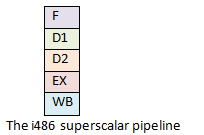
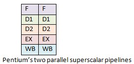
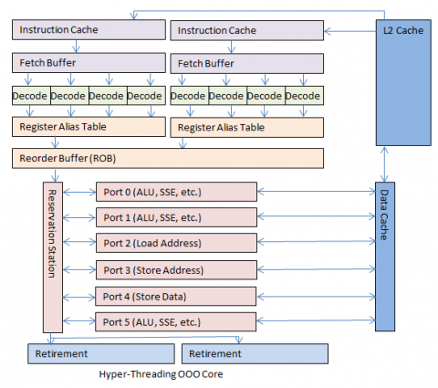

在我的另外的一篇博文为什么处理有序数组比无序数组要快中，提到了当代的CPU都有很深的pipeline，那么CPU的pipeline到底是什么东西呢？在CPU的工作流程中起到了什么样的作用呢？于是搜到了这么一篇文章。CPU的Pineline遨游之旅
一个好的程序员有必要去了解下在处理器的内部是怎么工作的，CPU就是关键。
那么在CPU内部发生了什么事情呢？执行一条命令需要多长时间？一款新的CPU有12层流水线或者18层又代表了什么呢？甚至31层？
应用程序一般把CPU当作一个黑盒子，指令按一定的顺序进入这个黑盒子，按顺序出来，这里面就有一些门道了。作为一个开发人员，学习下CPU内部发生了什么是非有用，特别是当你在进行调优的时候。
这篇文章就是要说说基于X86架构下的CPU的深度流水线（说明文章的目的和内容，背景非常重要）。
1 已知的事情
首先，我假设读者会一点编程，也有可能对某一门编程语言熟悉，如果当我提到了指令指针而你却一脸茫然的时候，这篇文章就可能不适合你了，当我说到寄存器、指令、缓存的时候，我假设你已经知道这都是些什么了，不知道就赶紧去查吧。
其次，我试图把一个复杂的主题简单化，如果你觉得我遗漏了一些重要的细节，请在文章的后面的评论处指明。
第三点，我主要集中讲解的是Intel和X86系列，我知道除了X86之外还有很多的处理器系列，AMD引进了很多先进的特性到X86系列中并且被Intel合并了进来，它是Intel的架构和指令集，英特尔推出了最主要的功能，为了简单和一致，我只说他们的处理器。
第四，这篇文章已经不是最新的了，新的处理器已经出现，我很高兴技术正在日新月异，快速进步，我希望有一天当前的所有在计算机技术的进步都会被更加令人兴奋的技术所取代。
2 Pipeline基础
从长远来看在过去的35年中X86系列的处理器没有发生特别重大的改变，虽然有很多功能上的创新但是老的基础结构没变，几乎所有的指令集都保留下来了，现代CPU中随处可以看到X86的老的技术的影子。
最原始的8086处理器中的14个CPU寄存器今天依旧在使用，其中4个是通用寄存器：AX、BX、CX、DX；另外的4个是段寄存器，设计来辅助指针寻址: 代码段（CS)、数据段(DS)、扩展段（ES）和栈段（SS）；4个是指向可变内存长度的索引指针：原始索引指针SI、目标指针索引DI、基准指针DI和栈指针SP，一个寄存器中保存了位标志，最后，还有本篇文章中最重要的，也是将要介绍的存储指令集的寄存器IP。（以下写到各个寄存器的时候都直接用简写代替）
指令集指针寄存器有一个特殊的作用，就是指示CPU下一个需要执行的指令。
所有的X86系列都沿用了这样的设计，首先，取出IP中的指令并解码该指令，在解码之后，指令被执行，有一些是从内存读数据或者向内存写数据，其它的做计算或者比较或者其它的动作，当指令执行完毕，该指令执行一个退出阶段然后指令集指针移到下一个需要执行的指令位置。
这个解码、执行和执行退出的模式应用在了8086处理器和最新的酷睿i7处理器上，额外的流水线阶段很多年前就已经被添加了，但是这个模式一直被保留着。
3 过去35年中有什么改变
按今天的标准来看的话最开始的处理器太简单了，8086处理器是评估当前的指令指针指向的指令，然后再执行解码、执行、退出，并移动指令指针到下一个位置，每一个新的芯片都做了改进，大多数的芯片增加了新的功能，一些增加了新的寄存器，基于本篇文章的目的，我主要关注在对指令集运行方面有很大影响的变化，其它的例如新增了虚拟内存空间或者平行处理器等也非常值得一说和有用，但是这篇文章不会讨论。
指令集缓存在1982年被加入到CPU中，取代了每次执行一个指令都要去访问主内存，CPU只要读取当前指令指针指向的数据即可，但是指令集缓存很小，仅仅可以缓存很少的指令，但是确实通过减少了来回访问主内存的次数提高了性能。
1985年，386新增了数据缓存，同时扩展了指令集缓存，通过读取数据之外的层面提高了性能，在这点上指令集缓存和数据缓存大大小也从几个字节上升到几千的字节层面。
1989年，i486升级到了5层流水线，相对于以前每个CPU只有一个指令处理的流水线，现在每一层都有一个指令处理流水线，在相同的时钟频率下，486的性能是386的2倍，每一个流水线都从缓存中获取指令（当时的指令集缓存大部分都是8KB），第2层的流水线会解码指令集，3层会解析指令执行需要的内存地址（要理解这一点需要明白计算机中的内存地址表示方式），第4层会执行指令，第5层执行退出，如果需要的话把结果写回到寄存器和主内存。在CPU可以一次处理多个指令之后，程序可以运行的更快了。
1993年，奔腾处理器诞生，由于法律诉讼原因处理器的名字由数字被变为名称，这就是为什么叫奔腾而不叫586的原因，奔腾架构新增了一个二级独立超大流水线，主流水线和i486类似，但是二级流水线执行一些简单指令，例如整数的运算，并行并且变得更快了。
1995年，Intel发布了奔腾专业版，这是一个完全不同的处理器设计，这个芯片有几个最新的特性包括无序执行核心（OOOcore）和随机执行，流水线被扩展到了12层，它包括一个叫做超级流水线的东西，许多指令可以被并行同时处理，这个OOO核心我们后面会深入讨论一下。在1995年OOO被引进到2002年我们的下一个阶段出现之间，有很多变化，新增了额外的寄存器，一条指令处理多条数据（单指令多数据或者叫SIMD），缓存被不断添加，已有的缓存被不断增大，流水线有时被拆分了有时被固定，这些改变对性能翻倍提升都特别重要，但是这些改变对于通过芯片的数据流的改变都不大（这块不太理解）。
2002年，奔腾4核心处理器引入了一项新的技术：”超线程“，OOO核心在提升CPU处理指令流的方面太成功了以至于处理的速度要比指令发送给核心的速度还要快，甚至在（高）负载的情况下，对于大多数的用户来说OOO核心因为效率太高了所以大部分时间都是空闲，为了更稳定和高效的给OOO核心发送指令，他们设计了第2层的front-end，操作系统会识别到2个CPU，有2组的寄存器，有2组的指令集解码器在遍历指令集指针和处理结果（相当于要加速给核心发送指令集的速度），结果集被一个共享的OOO核心处理，但是这个过程应用程序是不知道的，然后指令就像以前那样执行退出，结果被发送给他们来的那个对应的核心。（这里翻译的不好，大家有时间可以看看原文。）
2006年，Intel发布了微核心架构，更长远来看，它被称为“core 2”（因为人们知道core2 肯定比core1要好），有一个让人惊讶的改动，CPU的时钟频率被降低了，超线程也被移除了，通过降低时钟频率，Intel才可以扩展了所有的流水线平台，OOO核心被扩展了，缓存和缓冲区被加大了，处理器被重新设计成为专注于具有共享高速缓存的双核和四核芯片。
2008年，Intel发布了一系列的酷睿i3、i5和i7处理器，被设计成为重新引入了带有共享OOO核心的超线程处理器，这3款处理器最大的区别就是内部的缓存大小不一样。
未来的处理器，下一代的微架构处理器更新现在叫做HasWell，大概会在2013年发布，到目前为止公布的文档显示这款处理器采用了14-stage的OOO核心流水线，所以数据流的设计很可能仍然在遵循奔腾专业的设计。
所以啥是流水线？啥是OOO核心？他们是怎么提升处理器性能的呢？
4 流水线介绍
在上面的大多数描述中，（流水线就是）一条指令进入CPU、被执行、然后执行退出的过程，对于大多数的开发人员来说都很透明。i486有5层流水线，分别是：
- 获取，
- D1（主解码）
- D2（第2层解码，也叫做翻译或者转换）
- EX（执行）
- WB（回写寄存器和主存）
一条指令有可能在任何一层中。

这个CPU的Pipeline架构有一个主要的缺陷，想象一下下面的代码流，在执行回退前的交换2个变量的值：
|
|
CPU从8086开始直到386都没有一个内部流水线，他们同一时间只执行一条指令，指令之间完全相互独立，在这样的架构中3个连续的XOR指令不是问题。
我们假设这个操作发生在i486因为i486是第一个拥有内部流水线的X86架构的处理器，当我们某一时刻去看指令执行状态可能会感到疑惑，所以需要回头去看看上面那幅图。
第一条指令进入获取阶段并且我们执行完毕，在下一步第一条指令进入D1阶段，并且第2条指令被加载进到获取阶段，第3步第一条指令进入D2阶段，第2条D1，第3条刚被加载到获取阶段，在下面就会出错了，因为第一条指令进入到EX阶段…但是其它的指令并没有提前，解码停止了因为第2条的XOR指令需要依赖第1条XOR指令的结果，变量a要被第2条指令使用，但是a直到第1条指令执行完毕才会被回写，所以流水线就暂时挂起直到第一条指令执行完毕并回写结束，然后第2条指令才可以执行，第3条指令也是类似被卡住了，直到第2条指令执行完毕。
这种现象被称为流水线失速或者流水线气泡。
另外一个问题是有的指令执行速度特别快，有的指令执行速度很慢，这种现象在奔腾双流水线系统中更加明显。
奔腾专业版应用了12层流水线，当这个数字第一次被公布的时候被开发人员集体吐槽了，因为他们知道超级流水线是怎么工作的。如果Intel遵从了这样的12层超级流水线设计，那么流水线失速或慢指令将会极大的拖慢处理器的执行速度，同一时间Intel宣布了一个完全不同的内部流水线设计，无序核心（out of order，下面我们都统一简称为OOO)，从文档里很难理解，但是Intel向开发商保证结果会让他们感到惊喜。
让我们更深层次的了解下OOO核心。
5 无序核心流水线
要说明OOO一张图片比1000个字更有说服力，下面来看一些图片吧。
i486有5层流水线设计并且运行的很好，这个设计在其它的处理器中也很常见并且运行的都很好。

奔腾的流水线设计要比i486的好点，它有2个可以并行的指令集流水线，每一个流水线可以有多个指令，同一时间可以执行近2倍数量的指令。

在并行流水线中速度快的指令等待速度慢的指令也是一个问题，由于失速导致指令被顺序执行是另外一个问题，流水线执行仍然是线性有序的，仍然存在一个性能的瓶颈。OOO核心和以前的核心设计的线性路径有很大的不同，它增加了一些复杂的非线性的路径。

第一步是指令从主内存中被加载进CPU指令集缓存，现代处理器可以发现即将有一个很大的分支将会被执行（例如方法调用），然后提前加载指令集。
解码阶段和以前的核心相比有轻微的改变，相对于以前一次仅仅可以加载一条指令，奔腾专业处理器一个时钟周期可以解码3条指令，现在的CPU可以提高到4个，解码产生的小片段的操作称为微操作或µ-ops。
下一个阶段是微操作翻译，紧跟着是寄存器别名，许多操作会立即执行并且我们潜在的认为会无序执行，所以一条指令可以在读一个寄存器的同时另一条指令也在写入数据，这会导致写操作严重影响另一个需要这个变量的指令，在处理器内部原始的寄存器（例如AX BX CX DX等等）被当作内部寄存器使用，这对开发者是不透明的，寄存器和主内存中的值需要有一个相对应的临时值来进行计算，当前每一个时钟周期可以进行4次micro-ops。
在micro-op操作完成之后，所有指令的micro-ops会进入一个记录缓冲区，或者ROB，当前的ROB可以保存128个micro-ops，一个拥有超线程的处理器的ROB可以定位多个虚拟核心，所以的核心都可以一起访问OOO核心。
现在这些mirco-ops准备好计算了，他们被加载进RS，目前RS一次可以保存36个micro-ops操作。
现在是OOO核心发挥魔法的时候了，微操作程序同时处理多个执行单元，一旦数据准备OK之后，每一个操作都尽可能快的执行，有时候在处理其它准备好（数据）的运算时候会跳过等待时间长的micro-ops，这样耗时长的计算不会阻塞耗时短的计算，流水线失速的影响也被最大限度的降低了。
最开始的奔腾专业版OOO核心有6个执行单元：2个整数运算器、1个浮点运算器、1个加载单元、1个存储地址单元和1个存储数据单元，这2个整数运算核心是专门做整数运算，一个可以处理复杂的整数操作，另外一个可以立即处理简单的操作，在理想的情况下一个时钟周期可以处理7个mirco-ops。
现在的OOO核心依然有6个运算单元，它依旧有加载单元、存储地址、数据执行单元，但是其它的3个已经变了，每一个都可以执行基本的数学运算操作，或者执行更复杂的micro-op，每一个计算单元如果只专职做一种类型的操作可以比什么都做执行的更快，理想的情况下一个时钟周期可以执行11个micro-ops。
最终micro-op被执行，随后还需要执行几个小的阶段，（处理器和处理器之间不一样）最终执行WB，在这一刻指令被退出CPU到程序世界，指令指针被丢弃，从代码的角度看就是指令进入CPU然后退出返回结果，和老的8086处理器没什么两样。
如果你一直跟着思路走，你会发现一个非常严重的问题，如果执行地址在中途变了怎么办？举例来说，在代码中if条件为true或者命中了switch语句？在老的处理器上这意味着需要丢弃当前在超线程流水线的指令然后等待一个新的分支开始执行。
当CPU存储了100个指令但是指令流水线却发生失速现象的时候，对性能是一个极大的伤害，在新的指令集被记载进来然后流水线重启的过程中，其它所有的指令都要等待，在这种情况下OOO核心需要取消当前正在执行的运算，回退到一个更早的状态，然后从新的位置重新开始，这是一个很难解决的问题并且在这种架构设计（out of order)中会经常发生，这个时候下处理器的性能是工程师不能接受的，这个时候另外一个OOO的特性需要登场了。
处理单元投机执行就是解决方案，投机执行的意思是指当CPU遇见一个条件语句时候（例如if语句），OOO核心会简单的解码并且执行代码的所有分支，一旦核心发现了正确的分支，其它分支的结果就会被丢弃，这样就通过执行错误分支一个较小的代价避免了流水线失速，CPU的设计人员也设计了一个分支预测缓存来提高命中的几率，但是我们依旧有流水线失速问题，但是这个解决方案已经减少了失速发生的可能，失速由经常发生优化为偶尔才会发生。
最终，开启超线程的CPU会暴露出2个共享同一个OOO核心的处理器，他们共享一个记录缓冲区和OOO核心，对于操作系统来说就好像是2个单独的CPU一样，大概长这个样子：

拥有超线程的处理器提供了2个虚拟核心轮番给OOO核心提供更多的数据，带来了极大的性能提升，一些计算密集型的任务可以很好的利用每一个核心，在这种情况下，超线程可以稍微的降低下整体的性能，计算密集型工作流程相对相对来说少，超线程通常为消费者在日常的任务中提供约两倍的速度。
6 一个例子
所有的这些可能看起来有点疑惑，来个例子说明下会更好。
从应用程序的视角看，我们仍旧在旧的8086上执行指令集流水线，这是一个黑盒子，指令集指针指向的指令就在这个黑盒子中被执行，当指令结束的时候结果已经反映在了内存中，从指令集的视角看，这个黑盒子就是一场旅途。
这就是这篇文章说的CPU之旅，从一个指令的角度来观察：
首先、你是一条程序指令，程序开始执行。
你等待指令集指针指向你自己这样你就可以被执行了，当指令集指针距离你还有4K远的时候，这大概有1500个指令集在你前面，你被加载进了指令集缓存，加载进缓存花费了一点时间，但是距离你被执行还很远，这个预先fetch是第一步fetch的一部分。
指令集指针距离你越来越近了，当差不多还有24个指令远的时候，你和5个邻居被加载进指令队列。
处理器有4个解码核心，1个处理复杂指令其它3个处理简单的指令，你恰好是一个复杂指令，所以被解码为4个微指令。
解码是一个多步的过程，执行进程的一部分会执行一个扫描，看看你需要什么数据，你是否需要跳转到一个新的地址，解码器发现你需要一些额外数据，你不知道的是，电脑的另一端，你需要的数据被加载进数据缓存。
预准备站存储了准备马上执行的指令，你的第3个micro-op马上就要被执行，你不知道为什么它会被第一个执行，但是确实是它，几个时钟之后你的第1个micro-op进入到了Port2，加载地址执行单元，剩下的微操作等待各种端口收集其他微操作。它们等待端口2从内存缓存加载数据并将其放入临时内存插槽中。
他们等待了很长时间….
很长的时间….
在等待你的其它micro-op加载到正确的数据过程中，其它的指令来了又走，一个好现象是处理器知道怎么无序处理这些指令。
突然所有剩余的micro-op都被 Execution Ports 0 和1加载，加载数据一定是完成了，所有的micro-op都被执行了，最终所有的micro-op在预准备站又集中了。
就在这些指令返回的时候，这些micro-op都拿到了他们的临时地址，这些micro-op被重新组装，这个时候作为1个指令的你，又变完整了，CPU发送给你结果，礼貌送你出去。有一个很短的流水线需要传过一个门叫做“退出”，你在排队的时候发现了你在进来的时候你旁边的那些指令，甚至你还在原来同样的位置，这也证明了OOO核心知道他们要做什么。（暗指在内部可以无序，但是做为黑盒子，对外不能是无序的）。
每一个指令这样就退出了CPU，一次退出一个，顺序就是指令集指针指向的顺序。
7 结论
这一小篇的文章点亮了CPU内部发生的一些事情，这不是所有的魔法（细节），烟雾和镜子。
回到最原始的问题，我们应该有答案了。
CPU内容发生了什么，这是一个十分复杂的世界，在这里一个指令可能被拆分为多个mirco-op，被尽可能快的无序执行，最后被恢复为正确的位置和顺序，在外面看来就好像是被单独的顺序执行了，但是现在我们知道了在CPU内部是被无序执行了，有时候分支预测会十分有用。
一条指令执行一次需要多长的时间呢？在非流水线架构的CPU中会很好回答，在现代的CPU中这要看这条指令的上下文了，临近的数据缓存的大小和内容，有一个执行的最小的时间，粗略来说是一个常量。一个好的程序员和编译器要尽量使指令集运行的时间复杂度是amortized time，不是最慢的指令执行的时间，而是通过OOO核心计算的时间和数据加载到内存缓存和卸载缓存的时间。
一款新的CPU有12层流水线或者18层又代表了什么呢？甚至31层？这意味这CPU会一次性的加载更多的指令进来，很深的流水线意味着CPU同一时间很多指令在应用程序中都被标示为正在执行，当一切顺利的时候，OOO核心利用率很高并且性能提升很明显，但是不幸的是，流水线失速从最开始的一个小问题变成一个噩梦，因为一旦失速就要有成百上千的指令需要被从流水线中清除出去。
我知道了这些，我该怎么应用到编程中去呢？好消息是CPU可以预期到大多数的情形，编译器也为OOO核心优化了好几十年了，CPU在数据和指令有序的时候运行的相当好，你只要保持代码简单就可以了，简单的代码会有利于编译器去优化你的代码，加速计算，尽量避免跳转，如果确实需要跳转，那么就每次使用相同的方式（这块不太理解啥意思）。复杂的设计像动态跳转表看起来很梦幻，但是却把CPU搞蒙了，CPU无法预期代码的走向，所以复杂的代码一般很容易失速和分支预测失败。另一个方面来说，保持代码简单和数据有序、相邻和连续会减少指令流水线失速的可能，选择合适的数据输出结构和输出会有利于性能提升，一旦保持了代码的简单一般剩下的事情编译器就帮你搞定了。
谢谢你加入我的这段CPU之旅。
8 License
翻译完。转载请标示：http://hushengdong.com/2016/12/17/CPU-Pipeline了解CPU的工作内容/#more